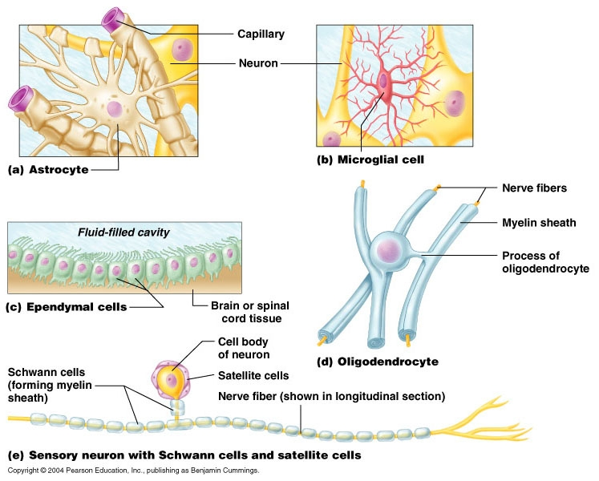
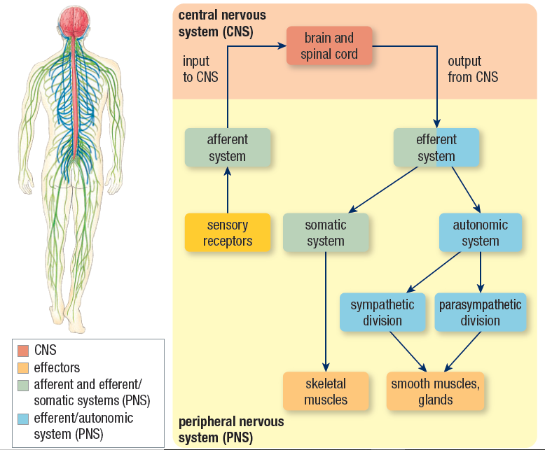

The nervous system controls every skeletal muscle that are responsible for somatic action that we take in our daily life such as; walking, talking, eating, writing, playing sports, playing violin, doing pottery...etc.
The nervous system is the body’s interface with the external environment and the control system that manages the internal environment.
Although the brain and spinal cord are surrounded by strong bones, they are still susceptible to injuries from severe impacts. And since the human brain is the control center of the body.
If something goes wrong with the brain, other parts of the body will likely be affected. How could such injuries affect the ability of the nervous system to maintain homeostasis?
| Physical trauma | Physiological problems |
| Strokes | Brain Tumors |
| Heavy metal | Poisoning: Mercury | Infection: Meningitis |
Callout
Bees do not see colors in the same way that humans do. They see a broader spectrum of light, including ultraviolet light. Bees are primarily attracted to flowers based on the visual characteristics of the flowers.
They are particularly attracted to flowers that radiate more ultraviolet light, such as white, bright yellow, blue, or purple flowers. A neuron is a specialized nerve cell that is the functional unit of the nervous system.
But does a neuron have the same compound and structure as an ordinary cell?
Neuron
Callout
Afferent neurons or sensory neurons: transmit stimuli collected by their sensory receptors to interneurons.
Interneurons: integrate the information to formulate an appropriate response. They are local circuit neuron found the majority in the central nervous system; relays impulses between afferent and efferent neurons
Efferent neurons: carry the response signal away from the interneurons to the effectors, which can be muscles and glands. Efferent neurons that carry signals to skeletal muscles are called motor neurons.
Callout
Callout
Neural signaling—communication by neurons—is the process by which an animal responds appropriately to stimuli. In most animals, neural signaling is composed of:
Callout

Schwann cells form tightly wrapped layers of the plasma membrane, called myelin sheaths around axons.
Brain + Spinal cord

Callout
Integration of information and processing.
Peripheral nervous system:
Efferent autonomic system
Controls physiological involuntary process (contraction of smooth muscles).
Peripheral nervous system:
Afferent and efferent somatic system
Controls voluntary movements and actions (contraction of skeletal muscles).
Callout
An example of the simplest neural circuit is the reflex arc; The withdrawal reflex that results when your finger touches a very hot object; your reaction to pull out your finger is instantaneous and immediate.